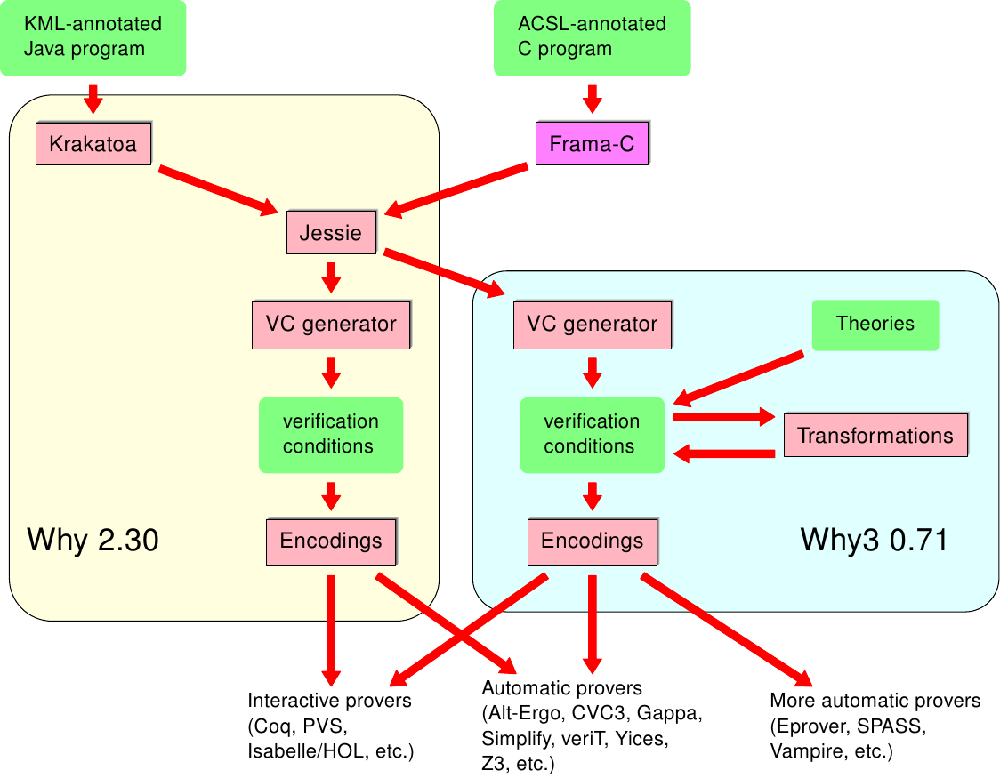

Krakatoa and Jessie: verification tools for Java and C programs
Overview

Krakatoa and Jessie are two front-ends of the Why platform for
deductive program verification. Krakatoa deals with Java programs
annotated in a variant of the The Java Modeling
Language. Jessie deals with C programs annotated in the ANSI/ISO C
Specification Language (ACSL).
Technically, Jessie denotes two things: an intermediate language
common to C and Java, and a plugin of the Frama-C environment which
compiles ACSL-annotated C code into the Jessie intermediate
language. The relationship between these tools are illustrated by the
picture on the right.
- Downloading
- Krakatoa and Jessie,
including the Frama-C plugin, are distributed together with Why version
2.33. Follow this
link for older versions. To install external provers, please see
the specific section below.
- Relationship with Why3
- The development of
Why is now frozen, meaning that future releases might be provided
e.g. for compatibility with newer versions of Frama-C, but no new
feature will appear anymore. The development of Why continues in the
context of a completely new system Why3. The foundations of
Why3, including new features, are presented in François
Bobot, Jean-Christophe Filliâtre, Claude Marché and
Andrei Paskevich. Why3: Shepherd your herd of provers. In Boogie 2011:
First International Workshop on Intermediate Verification Languages,
Wroclaw, Poland, August 2011.
However, Why3 does not have its own
front-ends for C or Java yet. For the moment, to smoothly encourage
users to move to Why3, Krakatoa and Jessie have been given the
option to generate intermediate code for the Why3 VC generator. It
is thus recommended to install Why3 conjointly with Why version
2.33. See the respective manuals of Krakatoa and Jessie for
details. The table below summarizes the compatibility between Frama-C, Why 2.xx and Why3 versions
| Frama-C | Why | Why3 | remarks
|
| Carbon-20110201 | 2.29 | 0.64 | very preliminary support for Why3 output, i.e. only -jessie-atp=why3ide or why3
|
| Nitrogen-20111001 | 2.30 | 0.71 | Output through Why3 VC generator and IDE is now the default, use former option -jessie-atp=gui to obtain the former behavior calling Why 2.xx VC gen
|
| Nitrogen-20111001 | 2.31 | 0.72 or 0.73 | 0.73 is recommended
|
| Oxygen-20120901 | 2.32 | 0.81 |
|
| Fluorine-20130401 | 2.33 | 0.81 |
|
Regarding Java source files, in version 2.30 and higher, the command gwhy File.java continues to call the former Why VCgen and gwhy interface, whereas krakatoa File.java now calls the Why3 VCgen and GUI. The former behavior of the krakatoa command is obtained using the new option -gen-only.
- Other resources
-
Jessie plugin of Frama-C
Jessie is a plugin of the Frama-C environment for static analysis
of C code. It aims at deductive verification of behavioral properties
of the code, specified using the ACSL language.
Documentation, including a tutorial and a reference manual, is
available in PDF format or in online HTML.
Other resources:
- A set of examples of annotated C programs verified with Jessie
is available on the ProVal
Gallery
- See also the examples provided in the directory tests/c of the source distribution.
- The Frama-C home page, describing Frama-C in the large, and its other plugins.
- The foundations of Jessie are described in part in Yannick Moy. Automatic
Modular Static Safety Checking for C Programs. PhD thesis, Université
Paris-Sud, January 2009.
- An extensive list of examples is proposed in Jochen
Burghardt, Jens Gerlach, Liangliang Gu, Kerstin Hartig, Hans Pohl,
Juan Soto, Kim Völlinger. ACSL By Example Towards a Verified C
Standard Library.
Krakatoa
Krakatoa is a verification tool for Java programs. It is a tool from
the Why platform for deductive program verification.
Documentation, including a tutorial and a reference manual, is
available in PDF format or in online HTML.
Other resources:
- A set of examples of annotated Java programs verified with Krakatoa
is available on the ProVal
Gallery
- See also the examples provided in the directory tests/java of the source distribution.
- Lecture notes, slides, and exercises of the Winter School on Verification
of Object-Oriented Programs are available on this page
- The foundations of Krakatoa are described in ``The Krakatoa
tool for certification of Java/JavaCard programs annotated in
JML''. Journal of Logic and Algebraic Programming, 58(1-2):89-106,
2004
- More technical details on the memory modeling is given in
``Reasoning about Java programs with aliasing and frame conditions''. In
J. Hurd and T. Melham, editors, 18th International Conference on
Theorem Proving in Higher Order Logics, volume 3603 of Lecture Notes
in Computer Science. Springer, August 2005.
- A specific paper about handling JavaCard transaction mechanism is
``Verification of Java Card applets behavior with respect to
transactions and card tears''. In Dang Van Hung and Paritosh Pandya,
editors, 4th IEEE International Conference on Software Engineering and
Formal Methods (SEFM'06), Pune, India, September 2006. IEEE
Comp. Soc. Press.
- Related tools:
Installing external provers
This page gives a few tips to download, install and/or configure
external provers. Each time a new prover is installed, you must rerun
the command why-config (in Why 2.xx) and/or why3config
--detect (in Why3). Using the latest version is recommended
(except for Yices, see below) and the config tool above will tell you
if the version detected is supported or not.
- Automatic provers
-
- Alt-Ergo
- available under binary form for Unix,
or under source form to be compiled using the OCaml compiler, from this page. A Microsoft Windows
installer is also available.
- CVC3
- available under source form and as a Linux binary from this page
- E-prover (Why3 only)
- available under source form as well as some binary
format from this
page
- Gappa
- a prover specialized on verification of numeric formulas,
including floating-point numbers, available under source form at this page
- Simplify
- available under binary form for various
architectures from this page
or directly here
- SPASS (Why3 only)
- available under source form as well as some binary
format from this
page
- Vampire (Why3 only)
- available under some binary
format from this
page
- veriT
- available under source form from this
page
- Yices
- available under binary form for various
platform from this page.
(Note that Yices version 2 which participated to the SMT-COMP 2009 has
no support for quantifiers; thus you should not use it with Why.)
- Z3
- available under binary format for Microsoft Windows as well as linux from this
page
- Interactive provers, Proof assistants
-
- The Coq proof assistant
-
- The PVS specification and verification system
- (Why 2.xx only for the moment)
- Isabelle/HOL
- (Why 2.xx only for the moment)
- HOL 4
- (Why 2.xx only for the moment)
- HOL Light
- (Why 2.xx only for the moment)
- Mizar
- (Why 2.xx only for the moment)
20/4/2013